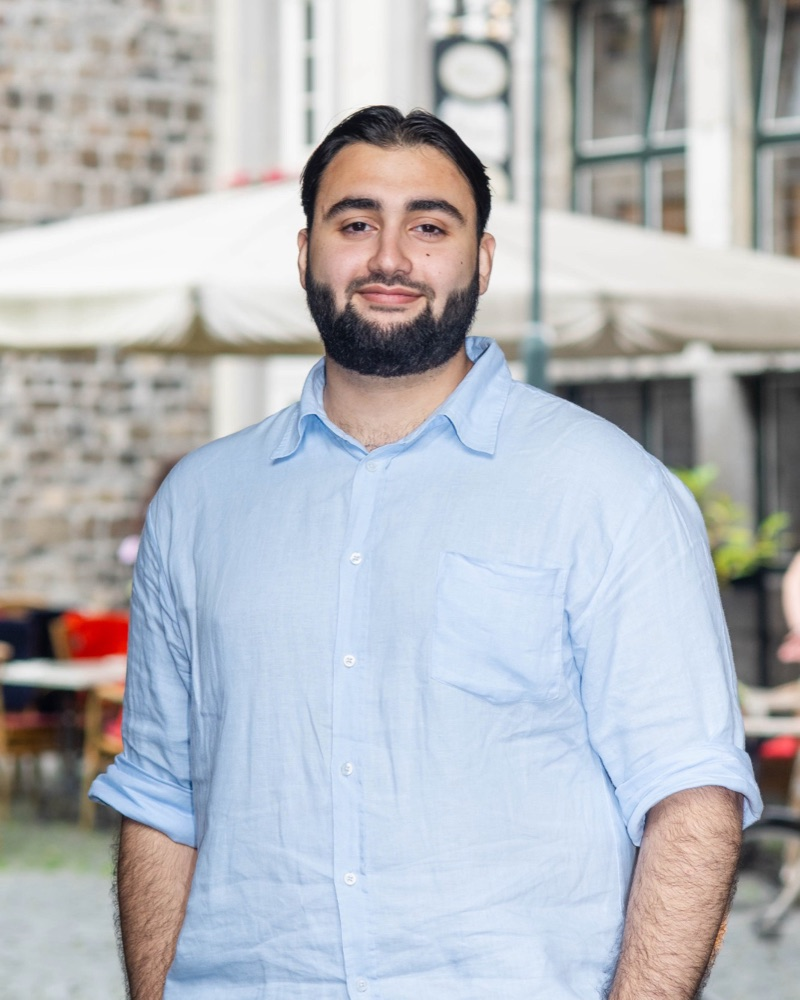
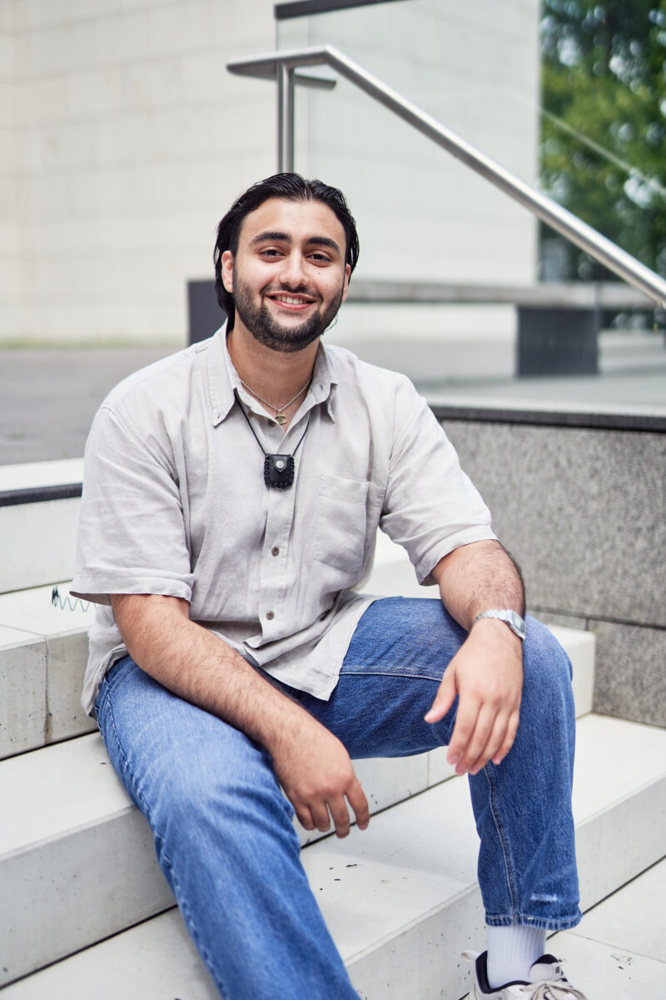
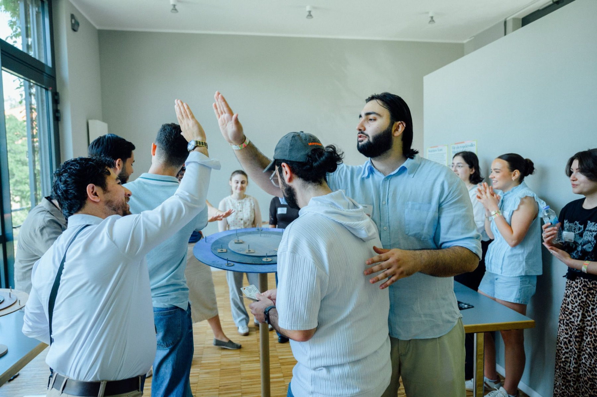

Mehdi Vassigh Ansari
Vorsitzender der Jusos Aachen · Sachkundiger Bürger in Stadt und StädteRegion Aachen · Politikwissenschaft an der RWTH Aachen
Ich studiere Gesellschaftswissenschaften mit Schwerpunkt Politikwissenschaft an der RWTH Aachen. Mich interessieren vor allem die Internationalen Beziehungen – insbesondere Sicherheitspolitik und Diplomatie.
Parallel mache ich Politik vor Ort: als Vorsitzender der Jusos Aachen, als Sachkundiger Bürger für die SPD in Stadt und StädteRegion Aachen, im Bundesvorstand der SPD-AG Migration & Vielfalt und in der Öffentlichkeitsarbeit der SPD-Fraktion im Städteregionstag.
Mein Ziel ist, wissenschaftliche Analyse und politische Praxis zu verbinden – perspektivisch in der Außen- und Sicherheitspolitik.
Anfragen zu Veranstaltungen, Gesprächen oder Zusammenarbeit gern per E-Mail an mehdi.vassigh-ansari@jusos-aachen.de.

Politische Ämter
Ratsinfo Stadt Aachen · Gremieninfo StädteRegion →- seit 09/2025Vorsitzender der Jusos AachenLeitung des Unterbezirks, Kampagnen, Bildungs- und Öffentlichkeitsarbeit
- seit 09/2026Bundesvorstand der SPD-AG Migration & VielfaltKooptiertes Mitglied für Nachwuchsförderung
- seit 06/2025Unterbezirksvorstand SPD Aachen
- seit 12/2024Sachkundiger Bürger im Rat der Stadt AachenSPD-Ratsfraktion · stv. Mitglied im Wohnungs- und Liegenschaftsausschuss
- seit 12/2025Sachkundiger Bürger in der StädteRegion Aachenund stimmberechtigt im Arbeitskreis der Integrationsräte
- seit 12/2024Vorstand SPD-Ortsverein Laurensberg
In den Medien
 Aachener Zeitung · Okt. 2025„Wir sind Aachen“ – Demo gegen Rassismus und für Vielfalt
Aachener Zeitung · Okt. 2025„Wir sind Aachen“ – Demo gegen Rassismus und für Vielfalt
 SPD-AG Migration & Vielfalt · 2026Vorstellung im Bundesvorstand
SPD-AG Migration & Vielfalt · 2026Vorstellung im Bundesvorstand
 SPD Aachen · 2025Neuer Vorstand der SPD Aachen-Stadt gewählt
SPD Aachen · 2025Neuer Vorstand der SPD Aachen-Stadt gewählt

meet!-Mercator Europa Tour · 2022Fellow-Profil Jusos AachenVorstellung im Vorstand
Stadt Aachen
RatsinformationssystemMandate und Ausschüsse (Stadt)
Jusos AachenVorstellung im Vorstand
Stadt Aachen
RatsinformationssystemMandate und Ausschüsse (Stadt)
Fotos: Christian van’t Hoen (Demo), Pascal Skwara (Delegiertenbild) · Grafik: SPD-AG Migration & Vielfalt · Fellow-Foto: Stiftung Mercator
„Wir sind Aachen“ – Rede am Elisenbrunnen
Bericht lesen →

Diversify – Festival der Deutschlandstiftung Integration



Werdegang
Stationen
- seit 11/2025Politische ÖffentlichkeitsarbeitSPD-Fraktion in der StädteRegion Aachen
- 2025Hospitant im Abgeordnetenhaus BerlinDiversify-Programm der Deutschlandstiftung Integration
- 2022Hospitant, Bildungsnetzwerk Chinameet!-Mercator Europa Tour
- seit 2025RWTH Aachen UniversityB.A. Gesellschaftswissenschaften, Schwerpunkt Politikwissenschaft
- 2020–2025FH AachenGlobal Business & Economics, danach Wirtschaftsrecht
Stipendien & Auszeichnungen
- 2025Diversify-StipendiumDeutschlandstiftung Integration
- 2022Stipendium der Stiftung Mercatormeet!-Mercator Europa Tour
- 2020KlassepreisHeinrich-Heine-Gesamtschule Aachen